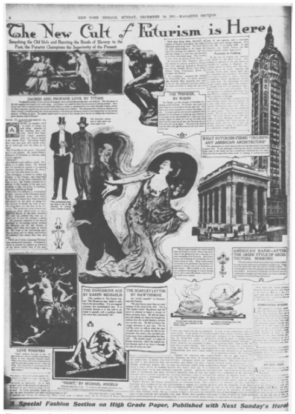
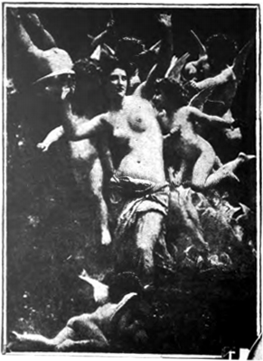
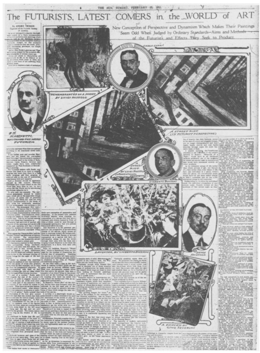
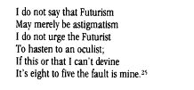

本文是John Oliver Hand在1981年冬季刊的《艺术期刊》发表的《Futurism in America: 1909-14》一文的中文翻译，借此学习一些未来主义在美国开端时期的知识。
Futurism in America: 1909-14
John Oliver Hand
Art Journal
Vol. 41, No. 4, Futurism (Winter, 1981), pp. 337-342
未来主义运动始于1909年意大利作家F.T Marinetti的《未来主义宣言》，而直到1915年在旧金山举办的首届巴拿马太平洋万国博览会（Panama–Pacific International Exposition）意大利未来主义艺术家的画作和雕塑作品才正式在美国展出。美国民众至此通过媒体以及各种渠道看到了大量未来主义相关的画作和文学作品，我们才得以所见未来主义概念在美国的发展。
未来主义第一次进入公众视野，是1909年2月20日意大利作家F.T Marinetti在巴黎的法文《费加罗》报上发表的《未来主义宣言》。《宣言》很快被翻译并邮寄到意大利，并在先锋诗歌杂志《Poesia》用意大利语和法语发表。这历史上首份未来主义宣言歌唱危险、崇尚暴力运动、宣扬艺术无政府主义，很快便传遍整个欧洲大陆。英文版的《宣言》在《Poesia》的四月到七月期刊上发表，并大量转载到海外期刊杂志，如英国的《每日电讯报》和《纽约太阳报》。英文中「未来主义（Futurism）」一词正式在宣言之后产生。
未来主义宣言的部分内容被转载在《纽约太阳报》上，这恰恰是Marinetti愿意看到的，他希望这一前沿的举动让意大利被认为是现代国家，而不仅仅是废墟和博物馆的国家。1909年《Poesia》杂志摘录了《纽约太阳报》对于《宣言》的评论：
当然问题是多方面的。欧洲向来重视传统不可打破的连续性，于是总在反对我们在艺术创新上的尝试，认为我们总在忽视传统。所有事情都是相对而言的：那些法国和意大利的艺术家总向我们要求一些实实在在、关于过去的证据，也许他们需要的，是把自己「放空（Tabula Rasa）」。
当时这份评论中并没有指出这里的「法国和意大利的艺术家」是谁，因为1909年的时候并没有谁可以被冠以「未来主义艺术家」的称号，但是看起来是针对现代艺术整体而言，甚至是那些作为《Poesia》杂志贡献者的作家和诗人。很奇怪，这篇文章并没有为未来主义在美国的传播起到什么特别的作用，因此从1909到1911年底，我并没有看到其他关于这场运动的描述或记载。
然而，1911年12月24日，《纽约先驱者报》一篇名为《未来主义热已至》的整版图绘报道（清晰版）打破了宁静。

文章采访了在纽约东19街拥有一间未来主义工作室的「美国未来主义教主」Andre Tridon，他把未来主义定义为「面向未来，抛弃对过去的崇拜」，用Tridon先生的话：
未来主义主张用未来的眼光看现在，而不是过去；把忘记传统当传统；当前需要永远来自于当前情况；忘记过去，因为过去都是错的、都是腐朽的。在我们的绘画、作文、言语和一切行为中抛弃传统吧！
作者认为所有在追求新的表达方式时抛弃过去的人都是未来主义者，而在Marinetti对未来主义的定义中认为，未来主义者是那些「一心鄙视传统的反叛者」，例如Catulle Mendes，Paul Adam，Gustave Kahn，以及Gariele D'Annuzio——他们都是《Poesia》杂志的长期供稿人。
Tridon虽未转述甚至提到Marinetti的《未来主义宣言》，他本人的评论和批评也可以看出他对未来主义的主张。例如，一副名为《Love Whispers》的画作，其中展示的是一位近乎全裸的女子围绕在一群小天使中间，典型的学院派、Gleyre（夏尔·格莱尔，瑞士古典主义和印象主义风格艺术家，指导过包括莫奈、和詹姆斯·惠斯勒在内的年轻画家）和Bouguereau(威廉·阿道夫·布格罗，法国学院派画家)的风格。

Tridon对此的评价及其负面，他说：
一位甜如蜜饯的姑娘，造作地听着一群莫名其妙的丘比特说话，她在干嘛呢？只有一个解释，画家靠着这裸女吸引顾客好挣钱。
Tridon对裸体的态度记录在1910年四月一篇名为《未来主义画作的技术宣言》的文章中，他指出绘画中的裸体「跟文学作品中描写通奸一样令人作呕和冗长乏味」。
运动在Tridon对绘画的整体评论中被提出：
在绘画中，未来主义是表达生活的运动，艺术运动与形式同样重要，而自然则不关乎形式。报纸上的卡通漫画家一笔一划针砭时事，他们自然是天然的未来主义者。这场运动的意味更多是以艺术的形式体现。
整版画报中摆着一对舞者，像是画报设计师草草准备的结果。人物带着典型的新艺术运动风（Art Nouveau），包裹在一圈空洞的曲线中。值得一提的是，Tridon并没有看到任何一副意大利未来主义的画作，便尝试从各种宣言的陈述中剥离出未来主义的视觉形象；因此可能最好、也可能是唯一他能找到未来主义的参照物是来自Rodin（奥古斯特·罗丹，法国雕塑家，《沉思者》作者）的画稿和雕塑作品（画报中上部的《沉思者》雕塑）。
Tridon对于艺术和生活的看法在美国有一定影响，但被当作人们消遣的对象。他对美国文学嗤之以鼻：
美国文学所描绘的不是生活，而是“英国人留下的腐朽做作的矫情”；在这一点上美国是失败的，因为她只会追逐毫无意义的传统、而不是未来。
Tridon批判的不只是文学，还有美国菜：“廉价而且跟英国佬的菜一样可怕”；他沮丧地指出尽管电器可以使得食物保持新鲜，可美国人只会吃腌牛肉。
Tridon只对美国现代主义建筑提出过最慷慨的赞美。图片中的左部出现了一座新古典主义建筑和一栋摩天大楼，在图片底部写着：
美洲银行——古希腊建筑的丑陋抄袭者！美国建筑史上最差的时期是追随并不实用的古代建筑风格的时期。所有银行都把自己建设成神庙，这也许在希腊供神可以，放在一个金融服务的场合，就是累赘、和周围建筑极为不搭。
而摩天楼便不一样了，它在功能上完美地适配了大都市的功能需要——「简直一部简洁而极具魅力的完美机器」。
Tridon在这篇文章中的一些评论把他的社会主义情愫与未来主义运动关联在了一起，也使得后者产生了一些政治观点的意味。这样的态度也符合Tridon的信念，即活动与因此产生的现代性（Modernity）应该扩展到人类存在的所有领域，而不是几个百万富翁的无聊癖好，诸如把艺术直觉放在古代神庙上。
而未来主义的概念也从André Tridon的这次专访中逐渐产生：首先，过去要么被遗忘、要么拿出来嘲讽；其次多元的独创性正是源自于现代技术，因此好好利用技术的优势。因此，未来主义可以被解释为「对过去的抛弃和对发展的歌颂」。André Tridon与意大利未来主义宣言的中对未来主义的定位不同，前者有明显的一分为二——抛弃过去、歌颂未来，而后者更多专注未来前卫的形式和行为。
André Tridon的二分理论认为：未来主义是对过去的抛弃和对发展的歌颂。
另外一份关于未来主义行为的报告出现在1911年刊载在8月号的《当代文学》期刊上一篇未署名文章《未来主义运动在意大利》。这篇文章开篇描述了1910年10月8日一次引起轩然大波的淫秽案审判：Marinetti的小说《未来主义者马卡法》，审判最后以被告大获全胜被判无罪而结束。同时文章大量篇幅还包括了对Marinetti《未来主义宣言》的翻译。
和Tridon的哗众取宠，这篇文章的语气更加中立和客观。主流观点对未来主义的看法依然停留在一直文学手法或者政治偏向上，而并为将其看作一种艺术形式。这位未署名的作者尝试还原Marinetti激进言辞背后的真正含义：
「烧掉博物馆」，他（Marinetti）承认这只是个宣传的噱头罢，他真正希望达到了是艺术家和作家能够用自己的眼睛看世界、用自己的标准丈量生活，而这正是多年以来所缺乏了，人们在蒙蔽在由空无的「纪念品」组成的生活幻想中。
这两篇文章在方法和目的上区别大致向我们描绘了1911年美国社会对未来主义的观点。Tridon有些骇人听闻的文章将欧洲现代艺术变成了一场对美国文化传统优劣的讨论。同时，这篇文章也首次在仅有的一些文献记录的条件下对未来主义进行了解释和理解。而《当代文学》期刊上的这篇文章的观点更加中立客观。尽管《未来主义画作的技术宣言》从1910年4月开始已经广为流传，一些未来主义画作至一年后才在米兰的Mostra d'Arte Libera展出，因此两篇文章都比较关注诗歌和文学，以及戏剧艺术在未来主义中的体现。
和1909年到1911年较为贫乏的文献记录相比，1912年的相关记录不剩枚数。这得益于未来主义在绘画和印刷领域的蓬勃发展，还有大量未来主义画作在伦敦和巴黎展出的原因。英文版本的评论和批评文章被大量传入美国。
1912年2月5日到24日于在巴黎的Bernheim-Jeune画廊展出的未来主义画作，仅仅开幕的两周后《纽约太阳报》便刊登了相关的评论文章，文章对展出的画作批评地体无完肤:
无论从哪个角度来看，都是极度荒缪的。
并认为未来主义是：
对一切已经建立的艺术标准的反抗。
有两幅画作被援引，两幅都遭到了评论者最激烈的批评。一副是Umberto Boccioni的《Les Adieux》：

另一幅则是Carlo Carrà的《The Funeral of the Anarchist Galli》:

接下来的周日，1912年2月25日，《纽约太阳报》刊发了一份全绘图文章《未来主义，世界艺术的新成员》：

作者依然是已经作为「美国未来主义协会组织者」的André Tridon先生，尽管我从未找到证据这个组织正式存在过。Tridon先是把上周对巴黎未来主义画展提出批评的守旧记者训斥了一番。他同意按照传统艺术标准，这些画作「粗鲁」、「原始」、「痛苦」、「荒缪」、「过于简单」又「过于复杂」。但是过去的标准不应该用于评价当代艺术。许多观点都与其1911年在《纽约先驱者报》那篇文章类似。他又一次赞美了摩天楼，因为它：
完美展示了未来主义者的那种美，那种纯粹的狂热、多样的喜好、那种挥斥方遒的意气、充满健康的激昂。
其中「挥斥方遒的意气（Simultaneous sensation）」成为Tridon对未来主义的一个新的评价，显然来自于巴黎画展的画展介绍。
对于Tridon来说，这种意气是维纳斯（Venus de Milo）的四射活力、是萨摩特拉斯胜利女神（Victory of Samothrace）无法抗拒的神力，这才是百世崇仰的精神，而不是因为它是古代艺术的纪念碑。在早些，Tridon认为罗丹「最早发现未来主义教义在艺术领域的体现」。这种体现主要在于罗丹对于运动（Movement）的关注，而不是仅仅只是构成。他提到罗丹在面对模特构思草图时，总是让他们在设计师走动，而不是让他们摆一个静态的姿势。
未来主义艺术的基础是「动态机能主义（Dynamism）」（注：未来主义画家不再描绘固定的瞬间时刻、而是在画布上再现生命本能的动态感觉【参考】），其视角与传统绘画艺术的标准不符，对于普通民众而言，必然显得晦涩难懂。Tridon认为传统的阿尔贝蒂透视法（Albertian Perspective）所表现的是外部世界到绘画的直接体现，而未来主义则是敲问内心。画报中将Lugi Russolo突破传统透视法的画作《反叛（The Revolt）》展示了两遍。其中一副甚至调转了45度，以展示这幅画作按照传统透视标准的样子。未来主义者用这样的方式颠覆观察者的传统视角，并创造一种全新的体验，吸引观察者深度体验。

Tridon认为「动态机能主义」的概念又和构成的复杂度相关：例如传统的作曲家如温琴佐·贝利尼（Vincenzo Bellini）总是使用一种主旋律，而理查德·瓦格纳（Richard Wagner）则将其政治和宗教方面思想的复杂性融入在其极其复杂的音乐织度（复杂的构成）中，例如《女武神的骑行（Ride of the Valkyries）》:
Tridon相信巴黎画展中真正体现正是这种时间、感觉、观感、与空间体验交织缠绕的动感。在意识到这样抽象的论述可能让大众迷惑，他又一次使用了上一次用过的那副《舞者》，尝试用画面上对人物肩部和臀部的光波和颜色的描绘连续解释未来主义的生动。
文中的其他两幅作品分别是Umberto Boccioni的《笑（The Laugh）》：

以及Luigi Russolo的《夜之回忆（Memories of a Night）》：

对动作的回忆，在碎片中与不同的心里状态重新交织，是对回忆的最佳表达。
这篇文章的最后记录了阅读1910年3月8日出版于都灵的《未来主义画家宣言》的相关评论。还有一段Marinetti的轶事：在面对反对的听众投来的橘子时，Marinetti淡定把橘子拨开吃了。
Tridon在文章的最后将未来主义和其他现代运动分开，这也成为未来主义在美国后续发展的关键点：
未来主义绘画和后表现主义和立体主义完全不同。后二者很少解释静态、缺乏动态的生活，而未来主义则希翼观察和表现运动中的生活、恒久的变化、并知微见著。
而这，也是Tridon关于未来主义最后的陈述。
1912年3月，巴黎Bernheim-Jeune画廊的未来主义画展在伦敦Sackville画廊再次展出。画展介绍册中由Boccioni撰写的前言这次被翻译成了英文，和画展中展示的画一起，成篇累牍的批评和评论潮水般涌来。
例如一篇题为《Painting the 'Simultaneousness of the Ambient'》的匿名文章出现在1912年3月23日的《文学文摘》上。文章并没有提出自己的批评，而是讨论这种实时的心境体验变化，以及因此产生的物体交织在理论上的必要性。作者似乎对这种必要性颇有微词，他写到：
任何一个理智的人对于艺术总有一些既有的原则，而画布是个有限制的地方，因此最好用来表现有限的事实。有个画派却尝试公开反抗这种原则：他们想一次展示所有，即任何事物都可以在任何时刻、在视觉的范围内体现认知。好似业余摄影师在胶片上重复曝光的照片，几张重叠的景象除了让人费解，还有什么？
3月24日星期日，《纽约每日讲坛》的专栏作家专门讨论了未来主义的「艺术性（Matter of Art）」问题。作者的敌意在下面的陈述中一览无余：
不可思议的是其实这帮人竟然真的展出了，还有人评论。现在它们正在伦敦展示着，英国的艺术评论者竟然还一本正经地解释。他们根本不值得被解释。一群不知所谓的理论家连哄带骗把观众们引进来看这些虚张声势的玩意。
这样的评论反复出现在对现代艺术的评论中——未来主义（或者其他一些现代艺术流派）简单来说就是对公众的戏弄。
更有趣的、甚至更加负面的是一篇戏虐挖苦的趣文《Pressing Forward Into Space》，出现在《国家》4月11日的版面里。作者把未来主义和对Henri Bergson理论（Bergson认为人的生命是意识之流、是自由的创造意识、其向上的运动创造精神，也是进化的一部分Tridon）的追捧联系在一起。
注意，忍住别问那些年轻画家或者音乐家他那艺术的目的是什么，这样做只能让你看起来像块化石，对那些手捧Henri Bergson著作、崇尚意识流的姑娘们，简直是侮辱。这些大师们会重新考虑你的智商水平，耐心跟你解释，作为现代艺术家，他没有任何目标也没有观点，这是对空间的延伸。这话听起来怎么都像来自于Bergson的「意识流」。
虽然这个评论有些武断，但这却是在美国首次将未来主义和法国心理学家的理论联系在一起，即在运动和持续的需求中唤醒新的体验。如作者所言：
你要知道，真正塑造和主宰你的，是生活持续不断地运动着的你的生活。
未来主义者所认为的：「现在」是一种不真实，它被传统裹挟、它是规则的奴隶。但是作者认为在现实里这是反的——「这些孩子们是不是被这些理论烧糊涂了？」：
当未来主义画一个婴儿的时候，这是一个「形而上」的婴儿，在柏格森心理学中出生，喂着离经叛道的奶水。在视觉上，变成了一位焦虑的母亲，满手细软，在清晨地铁上，挤在两个胖男人中间。可什么是真实和生活，什么是传统和理论，只有交给最公正的判官去做选择。
这可能是关于未来主义艺术最尖锐的评价：未来主义艺术似乎是被附会到某一个明确的理论上。而理论应该是通过长时间的观察、分类、和提炼而产生的结果，显然这个过程和未来主义无关。
到1912年，业界开始接受未来主义，评论的语气也开始变得温和。例如，一篇刊表在《当代文学》杂志1912年7月号的名为《未来主义艺术的挑战》的文章援引了一些英国出版物、André Tridon在《纽约太阳报》、以及Willam Marion Reedy在圣路易斯的《镜报》的文章。有趣的是，有证据显示Tridon与Maritetti有直接的联系。
到1913年，美国民众已经有机会看到未来主义画作的复制品、以及《未来主义宣言》中的部分内容。在杂志或报纸上也有大量文章谈论未来主义，其中的有些将这场运动限于意大利、而有些则把一切有关于未来的、前瞻性的前卫行为称作「未来主义」。这一混淆没有因为1913年兵工厂展览而改善。
1913年2月纽约的兵工厂展览（The Armory Show）即带来了丰富的信息、也让民众更加困惑。1912年12月12日一份报道表示，很快一场展览将会带来一次新的艺术运动，未来主义将会区别于马蒂斯和立体主义而成为一个独立的单元展示。民众们因此相信他们会在两个月后的兵工厂展览看到未来主义作品，但是结果令人模棱两可。
我们在兵工厂展览中，看到了两种完全分离的概念，「未来主义（Futurism）」和「未来式（Futuristic）」。误解和解说员错误使用这些概念基于两个在大众和现代艺术间的明显矛盾。首先，如Milton Brown所述，对于在兵工厂展览中接受来自欧洲现代主义的视觉冲击，美国人完全没有准备好；其次，正如本论文所论述的，围绕在未来主义几年来的讨论并未给民众一个明确的解释。因此，当未来主义流派并未在兵工厂展览中出现，民众自然望文生义般把所有跟现代主义相关的东西统归于未来主义。
对未来主义的「泛化」，从罗斯福总统在参观完兵工厂展览的讲话中，可见一斑：
把那些顽固派甩掉、向前进当然重要，但在这场向前进的运动中，我们也要明白我们必须面对那些疯狂的极端份子。最近这场展览中这些极端份子就是那些立体主义者、未来主义者、或者新印象派。
最后，一段小诗发表在1931年2月9日的芝加哥《论坛报上》：

（注：大致翻译是，我不说未来主义只是他们散光、我不劝未来主义者去看看眼科、我猜不出来到底这是什么鬼、是我上班太多不怪他们。）
1915年5月，未来主义者们在旧金山举行的巴拿马国际博览会上举办了一个画展。这是第一次他们的照片在美国展示。47副来自Giacomo Balla，Umberto Boccioni，Carlo Carrà，Lugi Russolo，Gino Severini（下图）等人的画作，还包括Boccioni的两座雕塑作品被展出。
 Gino Severini The Dance of the Pan-Pan at the "Monico"
Gino Severini The Dance of the Pan-Pan at the "Monico"
遍历1911年以后美国相关文献，Christian Brinton的《巴拿马国际博览会艺术映像》一文恰当地总结了未来主义艺术和理论在这些画作被展示前的诸多方面：
喧嚣之下，未来主义令人振奋。作为一种艺术表达，未来主义是强势而不敏感的。它又是令人振奋、正面、且带有民族主义特点的。未来主义天生绚丽，除了意大利之外没有任何一个国家能够让这样的趋势发生。未来主义者们渴求在律动中寻觅生活的本质、化繁为简。所见所想所感皆下笔有神，变成未来主义的画作。他们打破桎梏——那些把表达限制在视觉上的成规，在抗争和追逐中，他们的艺术多样纷杂，绚烂而生机勃勃。